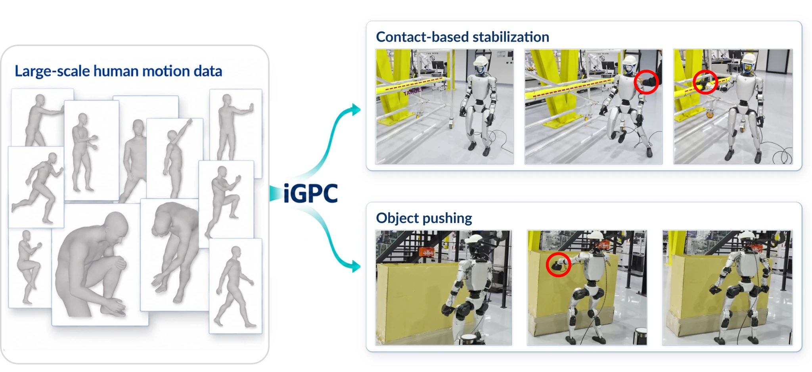

Reuse motion knowledge
Start from the pretrained GPC generative motor prior and decoder, retaining the structure of natural whole-body motion.
HUMAN MOTION. REAL INTERACTION.
A motion prior that reaches, pushes, and finds support.
Reach · Push · Stabilize · Sit
THE IDEA
A humanoid should do more than reproduce a motion. It should reach a target, use a support, and move an object in the world around it.
iGPC turns a generative human-motion prior into object-aware, whole-body control. Task-specific adapters build on a retained GPC motor prior, while perceptive students use depth, LiDAR, and proprioceptive history to act on the Unitree G1.
The result is purposeful interaction without a prescribed motion reference at execution.
Explore the methodHOW IT WORKS
Preserve the motor knowledge.
Learn the task. Ground it in perception.
Start from the pretrained GPC generative motor prior and decoder, retaining the structure of natural whole-body motion.
Condition task-specific adapters on interaction goals and object or support information. Refine experts for reaching, stabilization, and pushing.
Distill privileged experts using depth, LiDAR, and proprioceptive history, then calibrate prior inputs and refine the task adapter.
CONTROLLED SIMULATION EXPERIMENTS
Reaching, object motion, and support-aware behavior.
Motion-prior and perceptive policies in action.
Video could not load. Open the clip ↗
Compare whole-body reaching and contact behavior across the policies shown in the video.
Open clipVideo could not load. Open the clip ↗
Observe object interaction and forward progress in the box-pushing comparison.
Open clipVideo could not load. Open the clip ↗
Video could not load. Open the clip ↗
The humanoid approaches the sofa and transitions into a seated posture.
Open clipQUANTITATIVE EVALUATION
Perceptive student performance across
three complementary tasks.
Commanded reaching
95.95%
Perceptive student, compared with 99.32% for the privileged expert.
2,048 matched trials per methodSupport-assisted stabilization
4.88%
Compared with 18.36% for leg-only GPC at a push Δv of 2.0–2.5 m/s.
512 matched trials per methodBox pushing
67.59m
Mean student performance over episodes of up to 60 seconds.
±1.05 m across four seed means| Task / metric | iGPC student | Comparison |
|---|---|---|
| Reaching · rail-contact success ↑ | 95.95% | Expert: 99.32% |
| Reaching · body collision ↓ | 5.22% | MLP: 50.73% |
| Two-push stabilization · fall rate ↓ | 4.88% | Leg-only GPC: 18.36% |
| Box pushing · forward displacement ↑ | 67.59 ± 1.05 m | VisualMimic: 45.17 ± 0.07 m |
Stabilization uses two pushes with Δv 2.0–2.5 m/s. Box pushing uses a 3.8 kg box, effective friction 0.6, and four seeds with 128 trials per seed. The box comparison matches shared reset and box conditions, while retaining each method’s native simulator and control interface: Isaac Lab for iGPC and MuJoCo for VisualMimic. See the paper for the complete protocol.
PERCEPTIVE CONTROL ON UNITREE G1
From a reaching command to physical contact.
Four ways to interact with the environment.
Video could not load. Open the clip ↗
Video could not load. Open the clip ↗
Video could not load. Open the clip ↗
Respond to a push and grasp the nearby rail to help recover balance.
Open clipVideo could not load. Open the clip ↗
Lower the body and transition from standing to seated contact with the sofa.
Open clipQualitative demonstrations on Unitree G1. Numerical benchmarks are reported in the simulation section.
THE COMPLETE STORY
Motivation, method, and experiments.
The full 2 minute 51 second video, with audio.
Video could not load. Open the full film ↗
THE PAPER
Generative Motion Priors for
Object-Aware Humanoid Interaction
Anonymous ICRA 2027 submission
Read the full paper